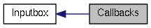

|
Cream-Browser unstable
|
|
Cream-Browser unstable
|
|  |
Functions | |
| static void | inputbox_activate_cb (Inputbox *obj) |
| static gboolean | inputbox_keypress_cb (Inputbox *obj, GdkEvent *event) |
| static void | inputbox_focus_in_cb (Inputbox *obj, GdkEvent *event) |
| static void | inputbox_focus_out_cb (Inputbox *obj, GdkEvent *event) |
| static void inputbox_activate_cb | ( | Inputbox * | obj | ) | [static] |
| obj | A Inputbox object. |
This function handles the signal "activate" which is emitted when the user validate the entry by pressing Enter. This handler is able to run a command, start a research (forward or backward), and modify the commands history.
| static void inputbox_focus_in_cb | ( | Inputbox * | obj, |
| GdkEvent * | event | ||
| ) | [static] |
| obj | A Inputbox object. |
| event | The event. |
This function is called when the inputbox get the focus. It modify the Cream-Browser's state (see CreamMode) to CREAM_MODE_COMMAND.
| static void inputbox_focus_out_cb | ( | Inputbox * | obj, |
| GdkEvent * | event | ||
| ) | [static] |
| obj | A Inputbox object. |
| event | The event. |
This function is called when the inputbox loose the focus. It modify the Cream-Browser's state (see CreamMode) to CREAM_MODE_NORMAL.
| static gboolean inputbox_keypress_cb | ( | Inputbox * | obj, |
| GdkEvent * | event | ||
| ) | [static] |
| obj | A Inputbox object. |
| event | The keyboard event. |
TRUE if the signal was handled (will result in stopping all other handlers).This function handles the signal "key-press-event" which is emitted when the user press any key on the inputbox. This handler is able to modify the Cream-Browser's state (see CreamMode), and to read the commands history.
 1.7.4
1.7.4